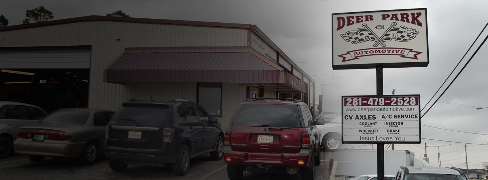
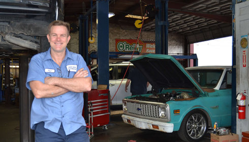

Local roots.
Honest repairs.
Road ready.
From a check engine light to brakes and A/C, turn to a family owned, veteran owned shop right here on Center Street.

Monday–Friday, 8 AM–5 PM
Care for the miles ahead.
Explore common repairs and maintenance, then call with your vehicle details to discuss service.
Brake repair
Squealing, vibration or a change in pedal feel deserves attention. Call the shop to discuss your symptoms and arrange a brake inspection.
Explore this service →02 / AUTO CAREA/C & heating repair
When the air is warm, airflow is weak or the heat stops working, start with a diagnosis rather than a guess.
Explore this service →03 / AUTO CAREEngine diagnostics & repair
A warning light or a change in performance is a reason to have your vehicle checked. Deer Park Automotive lists code scans, engine repair and leak detection among its services.
Explore this service →04 / AUTO CAREWheel alignment & suspension
Pulling, uneven tire wear and changes in handling can warrant an alignment or suspension check.
Explore this service →05 / AUTO CAREVehicle maintenance
Stay on top of the routine work your vehicle needs. The shop lists oil changes, tune-ups, coolant flushes, injector flushes and transmission flushes.
Explore this service →06 / AUTO CARECooling system & leak repair
A rising temperature gauge, coolant loss or a puddle beneath the vehicle should be checked. The shop lists radiator/coolant repair and leak detection.
Explore this service →
Good work starts
with good people.
Deer Park Automotive is a family owned business led by Paul Gulski, a military veteran and hot rod enthusiast. The shop describes its approach as honest, fair dealings and treating customers with respect.
Get to know the shopA straightforward next step.
Tell us what changed.
Share your vehicle, symptoms and any warning lights.
Bring it to Center Street.
Call ahead for availability. Ask about the after-hours key drop if needed.
Understand the repair.
Ask the team about findings, repair options and expected timing.